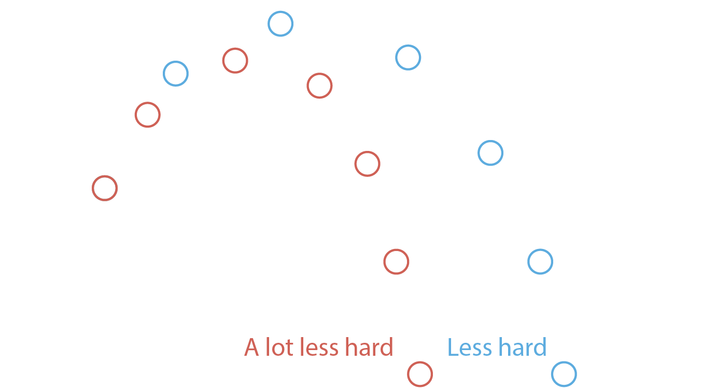
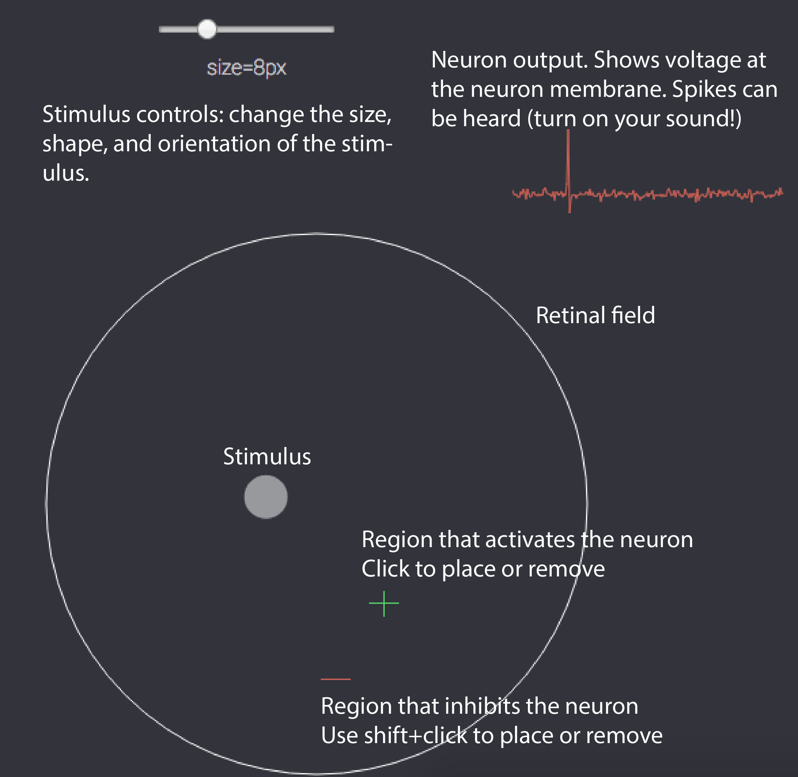
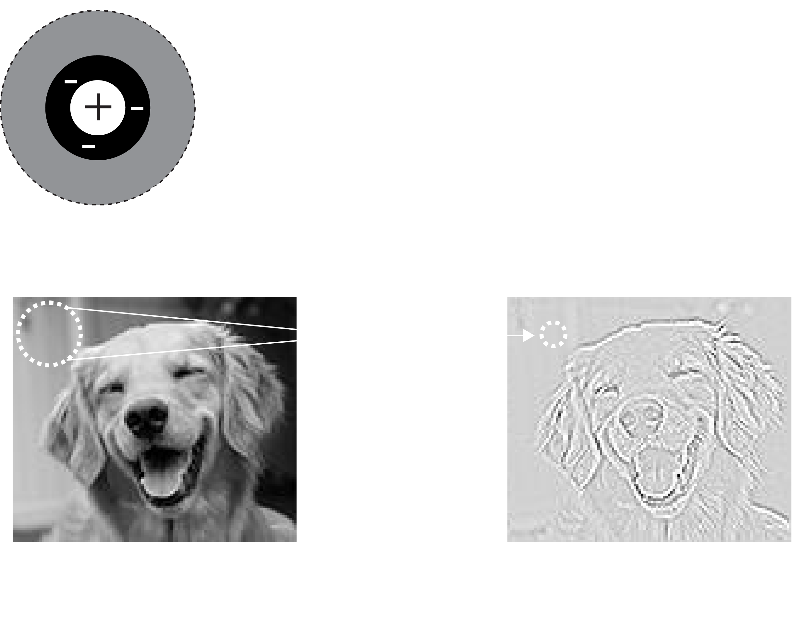
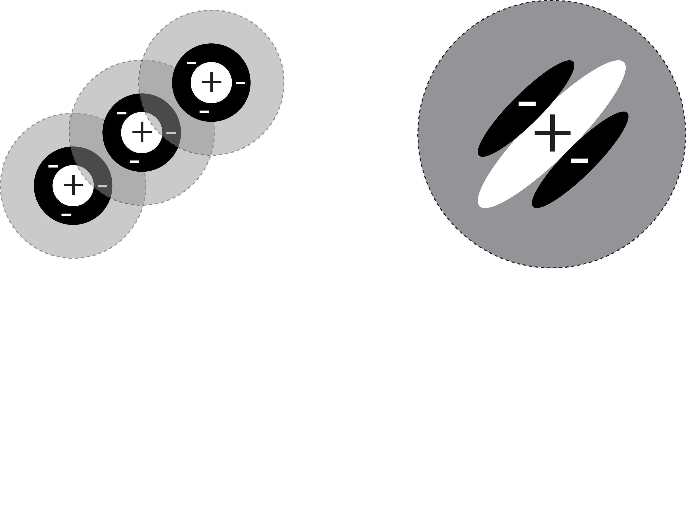
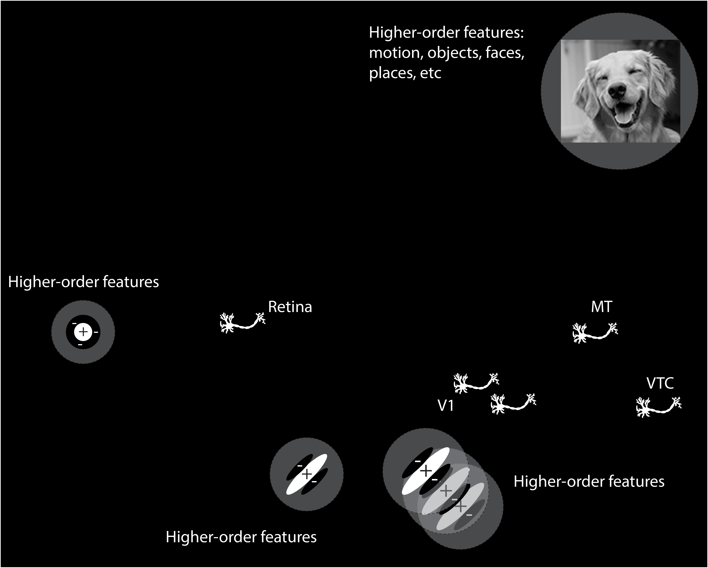

Simple cells, complex cells, and deep neural networks
Introduction
In this lab we will be exploring some of the details of the simple and complex cells which we learned about in lecture. You will be running some example code which will show you how different cells “see” the world and eventually using a deep neural network similar to those that Facebook, Google, Tesla, and Apple are using to identify you in your images, control their driverless cars, and understand your voice when you ask your phone for information.
Learning goals
After this lab you should have a better understanding of the following:
- How cells in visual cortex can act as filters, only detecting certain patterns of information.
- How representations in the cortical visual hierarchy become more complex as you proceed deeper through cortical areas.
- Be able to explain why invariance is an important property to have in the highest levels of visual cortex.
If you already know how to program you will find bonus content sprinkled throughout the tutorials. This content is not required but will help you get a more in-depth understanding of what's happening behind the scenes.
What are computational models
Think about the following description: When I throw something into the air, gravity causes it to fall back down. This is a verbal model of the behavior of something that we have observed. It isn't the only possible verbal model, we could add all kinds of complexity, but it has a certain simplicity to it that is enticing.
All of our knowledge comes in this form. We take observations of the world and we distill them into models. It turns out that in general a model has the following structure: given some input, compute something, create an output. The input to our verbal model might be how hard we threw the ball and the output will be where the ball ends up. So you can immediately see that if I say to you: "This time, throw the ball less hard", or "Throw the ball a lot less hard", that these change the input to our model, and therefore the output.
Now a computational model is simply a verbal model rephrased in terms of specific numbers. For example our model from above can be rephrased as:
The f is a placeholder for the computation we're doing in deciding where the ball will end up. We'll come back to these more formal ideas later in the class. For now we want you to simply keep this core idea in mind: a model is a simplified explanation of some behavior we have observed, formalized to take an input and compute an output. Let's go on and use this idea to think about the visual cortex.
Introduction
A neuron in the visual cortex is like a small computer (or computational unit). Each neuron gets inputs from other neurons and if you go back far enough you eventually get to the retina, where the original inputs are photons of light. For any given neuron in visual cortex you can stick an electrode in and listen to that neuron's activation. This is making an observation about a neuron. Now, you can show different visuals to a neuron and by keeping track of what activates or inactivates the neuron you can get a sense of what that neuron cares about. With enough observations you can then start thinking about your model to answer the question: what is this particular neuron doing? Understanding this question will be our goal today.
Our first foray into neurons is going to happen right at the retina. In the retina there are retinal ganglion cells which receive more or less direct inputs from the photoreceptors. That is: the neuron's input is the presence or absence of photons in the immediate surrounding region. As you'll soon see retinal ganglion cells perform a simple computation. The responses of these cells to light were first studied by Stephen Kuffler in 1953. Kuffler did two things: (1) He explored what area of the retina each retinal ganglion cell responded to, which we call the receptive field, and (2) he explored what kinds of stimuli the retinal ganglion cells are responsive to, which we call sensitivity to a feature.
Now we're going to go back in time to 1953 and recreate Kuffler's classic experiment in your browser.
Tools to study neurons
Before actually studying the retina we want to quickly orient you to the toolkit we're going to give you. You'll see a panel like the one below. Your job will be to adjust the stimulus and move it around to find the areas of the retinal field that activate or inhibit this particular neuron. When you find these, you can mark them (by clicking). A green cross indicates that you believe a region activates the neuron, a red minus indicates you believe it inhibits the neuron. When you have done a good enough job mapping the receptive (mapping both activated and inhibited regions), the tutorial will allow you to continue.
1953: Retinal ganglion cells
You've placed an electrode in the retina of an anesthetized cat and you're now showing pinpricks of light. Remember: your goal is to find and map the receptive field: it has areas that are excitatory or activated by light and areas that are inhibitory. Click to mark a region as excitatory, shift+click to mark it as inhibitory. When you're successful the tutorial will display the true receptive field for you and allow you to continue
Congratulations! You've mapped your first receptive field. You can now see the areas that were excitatory and inhibitory. We call this particular kind of neuron a center-surround neuron, because it has a center that is excited by light, but a surrounding region that is inhibited by light.
Before going on we want you to do two things: First, try using a very large radius stimulus (20px+), what do you notice happens to the response of the neuron if you overlap both the excitatory and inhibitory regions? Why is this happening? Second, what do you expect the purpose of a neuron like this to be? By this we mean: what feature do you think this kind of a neuron detects? You should know that there are both center-surround neurons that have an excitatory center and inhibitory surround and the reverse.
Center-surround cells detect edges
The answer to the question we posed on the previous page is that center-surround cells detect edges. In the image below we're showing you a raw image and a version that has been "filtered" by a center-surround type cell. The filtering process involved re-calculating each pixel in the image based on the response of a center-surround cell with a receptive field centered at that pixel. See the graphic below for a visual of what's going on.
To complete the filtering this process is repeated, moving the receptive field (and thus the corresponding response position) across the entire image. It's as if we had hundreds of the same cell copied, each one seeing a different location on the original image. This is in fact how the brain works in practice. Here again is the filtered image, but zoomed in so you can identify the edges that have now been highlighted, as promised!
This is what we mean when we say that neurons in visual cortex prefer certain kinds of features. You can also now describe a verbal model for center-surround cells: what is the input? what is the computation performed? what is the output? Discuss this with your partner before moving on--make sure you understand what these cells are doing as things are only going to get more complicated!
1963: Simple cells
About five years after Kuffler mapped cells in the retina two researchers at Johns Hopkins, Torsten Wiesel and David Hubel began setting up their own cat lab, now attempting to record from cells in the early visual cortex. The story of how they discovered what kinds of features activate V1 cells is here on YouTube and is quite surprising: it was a complete accident. If you want to skip the video the answer turns out to be oriented bars. But the real question is: what kind of a receptive field do you need to detect oriented bars? For figuring out the answer (among many other contributions) Hubel and Wiesel received the 1981 Nobel Prize. Now you get the opportunity to repeat their classic experiment below (same game as before!):
Nice work! We've now revealed to you the true receptive field. You can keep trying different stimuli now to help you understand why this particular setup is responsible for generating the pattern of responses you observed. While you do this think about the next question in our tutorial: we know that V1 simple cells get inputs from retinal ganglion cells, can you imagine how you might sum up the output of multiple retinal ganglion cells to get a receptive field like the one above?
Simple cells from retinal ganglion cells
The graphic below walks you through how to build a V1 simple cell using the output of center-surround cells. It turns out to be quite simple--it's just a matter of combining a few cells in a line.
What's particularly interesting about this is that we've gone one synapse (neuron-to-neuron connection) further and simultaneously gone one stage up in complexity. In fact instead of just responding to points (one dimension), we can now respond to lines (two dimensions). As you might expect when we go further into the visual cortex hierarchy things will continue to become more complex. If you're curious there is a bonus content section below which explains the computational model we use to build simple cell receptive fields.
Bonus content (not required)
Bonus content: Simple cell model
When we built up the receptive field on this page we didn't actually connect retinal ganglion cells together to generate a simple cell. It's simpler in practice to make a model of the simple cells directly. The model that has been suggested (I believe by Marcelja and Daugman) is a "Gaussian windowed sinusoid". We'll break this down with some plots below so that you can better understand what this looks like
The mexican hat function
Simple cells tend to have excitatory and inhibitory regions that are cyclical, as in they repeat across the receptive field. These also tend to fall along one axis. This should sound a bit like a sinusoidal function. But as you discovered, the receptive fields are quite small and "fall off" quite quickly. This is usually modeled using a gaussian probability density function. Combining this creates a "mexican hat" function, which arguably looks somewhat like its namesake. Take a look below at the two functions (sinusoid and gaussian) and their combination.
As we explained before this a computational model of the receptive field properties. It doesn't perfectly match the truth, but it captures enough of the characteristics of simple cells that it becomes quite useful for calculations.
1963: Complex cells
Hubel and Wiesel went far beyond identifying simple cells, they actually characterized a whole set of different kinds of cells in early visual cortex. We've shown you one type of simple cell, but there is quite a variety of them. In addition there are cells that they named "complex cells". Below we have a stimulus (an oriented bar) and controls like you had for the retinal ganglion cells and simple cells. But this time we've already centered the stimulus on the receptive field for you, so no need to search for it. All you need to do is adjust the controls and do your best to map the excitatory and inhibitory regions of the receptive field. When you've done the best job you can, call over the TA so they can take a look.
So this was a trick question, sorry about that! The receptive field of this cell is impossible to "draw" on the retina. This is because complex cells build up their receptive field features from the retinal ganglion cells and various kinds of simple cells. This causes them to have a property that cannot be represented visually on the retina: invariance. Try moving the stimulus along the "shift" axis again: notice that at the optimal orientation there is no change in the firing rate! Why is this? If you imagine the responses of several simple cells (see the visual) being combined you can get a sense of what's happening.
Invariance is crucial because it means that a representation is becoming more abstract. Instead of saying that a simple cell sees "an oriented bar at a specific location", you could now say that a complex cell sees "an oriented bar in a general region". Presumably if you go up another layer or two you will find cells that can be described as seeing "whether there is an oriented bar visible". This is a key concept: as you pool together simple neurons the features become more abstract and more complex.
Complexity
As simple feature detectors repeat and invariance increases there are two interesting effects as you go up the visual cortical hierarchy. First, by virtue of pooling the responses of neurons you get increasing large receptive fields. Second, the complexity of the detected features increases substantially, from pinpoints of light, to edges, to complex things like motion, faces, places, etc. It is still not understand exactly how visual cortex is organized, but the increase in complexity is a well known defining feature. Taken together this means that neurons at the "top" of the visual cortex (such as in ventral temporal cortex, VTC) have a receptive field that covers most of the visual field and are responsive to very complex features like the presence or absence of human faces. In other words, these cells are excited when you see a face, regardless of where that face is exactly. You should be keeping in mind an image like the one that follows as you move forward in the course:
Category detectors
You've now seen a whole lot of examples of how the early visual cortex processes stimuli to understand the world. We've shown you:
- How retinal ganglion cells detect the location of light on the retina.
- How simple cells use that information to extract the "edges" in a scene
- How more complex features can be detected by simply layering repeated simple detectors on top of each other
- How a property such as invariance can be constructed by pooling similar inputs together
This covers much of how early visual cortex works which brings us to a final question for this tutorial: are these simple ideas sufficient to understand how the cortex might represent extremely complex features like the identity of objects? We aren't totally sure at this point, but recent developments in computer vision suggest that we're getting closer to an answer. Geoff Hinton in 2005 revealed that a deep neural network which strings together simple feature detectors (like simple cells) can perform object recognition at near human performance.
Below we're going to show you one of these deep neural networks in action. There is a network running in the background that was trained to identify hand-written digits (numbers 0->10). You can draw in the black box and you'll see the networks estimate of what you've drawn on the right. Shift+click to clear the entire canvas. Have fun!
This particular network happens to have an error rate near 1%, although the way you draw letters here is a bit unnatural compared to the training data (real drawings). With a bit of persistence you should find that it's easy to trick this network: what features do you find cause it to be confused? Keep in mind that this network was trained with a very specific set of data--one of the big goals in this research area is to figure out how to train a deep neural network on one type of data and have it generalize to another without every seeing it.
On other tasks such as classifying object categories (dogs, cats, cars, buildings, etc) similar networks now achieve better than human performance. Research in this area has now turned to understanding why these networks do so well. The short answer turns out to be that as they repeat simple operations over and over, similar to actual neurons, the "features" that they represent become increasingly invariant and complex. Like in the human brain this allows these deep neural networks to see all sorts of categories by building up the complexity over time.
Tutorial complete!
Your TAs would be happy to discuss any aspect of the tutorial. As a reminder, you should now have a better understanding of the following:
- How cells in visual cortex can act as filters, only detecting certain patterns of information.
- How representations in the cortical visual hierarchy become more complex as you proceed deeper through cortical areas.
- Be able to explain why invariance is an important property to have in the highest levels of visual cortex.